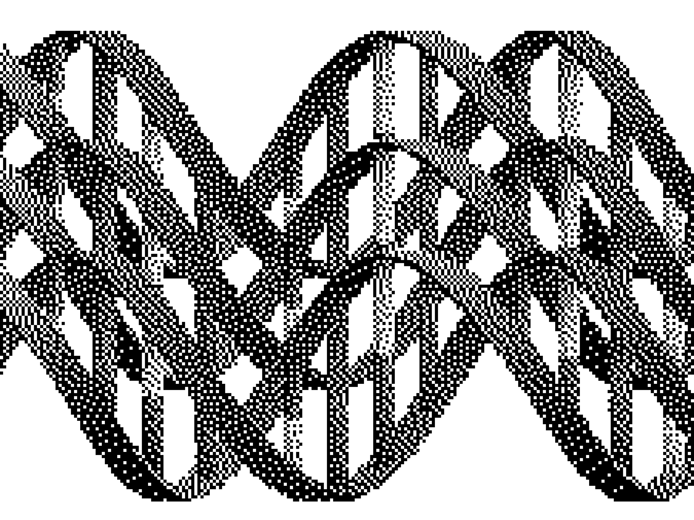

The Spark
I submitted myself for profoundly higher education. Academia in our day and age is a thing of the past with technological advances breaking the pupillage-tutelage barrier. There is no need to be a student, when the masters themselves can now uplink directly into your brain and phase their knowledge and expertise into your neuroplastics.
The process itself is like taking a sharp sting to the back of your head where your skull and neck meet. You see sparks fly when the connection happens. Your cervical vertebrae become the focal point of your rewiring towards a smarter you. No need to study the same old topics and produce more tautologies. No need for endless replicative research when biases become clear after the phasing.
Part of me fears losing my identity. I've heard the person you were becomes reshaped and rewound. A whole new perspective flooding your cells. The biggest complaint is often the rise of self-criticism. The new you sees and feels the body it's become trapped in, and in some cases becomes desperate at the realization their bodies are incapable of fulfilling their desires and instincts. It's like putting a super processor in an outmoded motherboard. A waste of potential held back by broken flesh.
Ultimately, I think it's worth it. I feel it'll make me happier and a better person. Like in those movies where people take a pill and suddenly unlock their brain's full potential. It's sorta like that, except I'm willing to let them turn my empty head into a pristine machine of intellect. I want to be "illuminated", as they say.